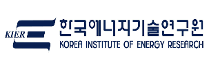
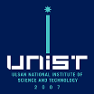

The team연구실 사람들
A new lab, founded in 2026. The first cohort of members is being recruited now.2026년에 시작한 새 연구실입니다. 지금 첫 구성원을 모집하고 있습니다.
Hyungyeon Cha, Ph.D.차형연 교수
Hyungyeon Cha works on the practical development of high-energy cathode materials — single-crystal Ni-rich cathodes, precursor-free synthesis, and their integration into dry-processed and all-solid-state cells. Before joining Dong-A University, Dr. Cha was a senior researcher at the Korea Institute of Energy Research, where the work spanned material, electrode and cell design, including two national platform projects for pilot-cell manufacturing and dry-electrode production lines.차형연 교수는 고에너지 양극재의 실용화 연구를 수행합니다. 단결정 하이니켈 양극재, 무전구체 합성, 그리고 이를 건식 공정·전고체 셀에 통합하는 연구입니다. 동아대학교 부임 전에는 한국에너지기술연구원 선임연구원으로 소재·전극·셀 설계를 아우르는 연구를 수행했으며, 파일럿 셀 제조와 건식 전극 생산라인 구축을 위한 두 건의 국가 플랫폼 사업에 참여했습니다.
Dr. Cha received B.S., M.S. and Ph.D. degrees from UNIST (advisor: Prof. Jaephil Cho), and carried out postdoctoral research at Lawrence Berkeley National Laboratory with Dr. Robert Kostecki, contributing to the U.S. DOE Silicon Consortium Project on Si-based metallic glass anodes and to electrochemical lithium extraction.UNIST에서 학사·석사·박사 학위를 받았고(지도교수 조재필), Lawrence Berkeley National Laboratory에서 Robert Kostecki 박사와 박사후연구를 수행하며 미국 DOE 실리콘 컨소시엄의 Si계 금속유리 음극 연구와 전기화학적 리튬 추출 연구에 참여했습니다.
Career경력
- 2026 –Assistant Professor, Dong-A University조교수, 동아대학교 화학공학과 Department of Chemical EngineeringSustainable Battery Materials Lab (Cha Lab.)
- 2023 – 2026Senior Researcher, Korea Institute of Energy Research (KIER)선임연구원, 한국에너지기술연구원

Material / electrode / battery design · Post-LIB and next-generation batteries소재·전극·전지 설계 · Post-LIB 및 차세대 전지 - 2021 – 2023Postdoctoral Researcher, Lawrence Berkeley National Laboratory박사후연구원, Lawrence Berkeley National LaboratoryAdvisor: Dr. Robert Kostecki · Si-based metallic glass anodes (DOE Silicon Consortium), lithium extraction지도: Dr. Robert Kostecki · Si계 금속유리 음극(DOE 실리콘 컨소시엄), 리튬 추출
Education학력
- Ph.D.Energy Engineering (Battery Science & Technology), UNIST에너지공학(배터리 과학 및 기술), UNIST

Advisor: Prof. Jaephil Cho · Battery material synthesis지도교수: 조재필 · 전지 소재 합성 - M.S. / B.S.UNIST (Ulsan National Institute of Science and Technology)UNIST (울산과학기술원)